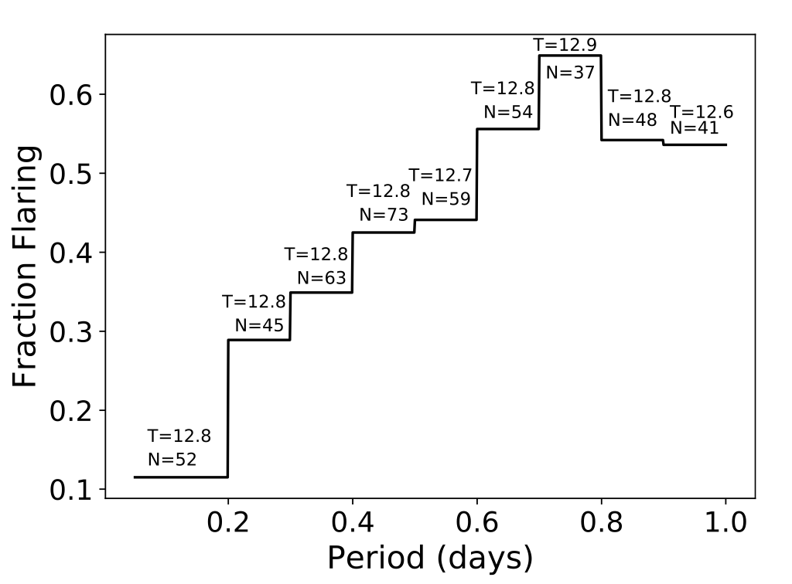
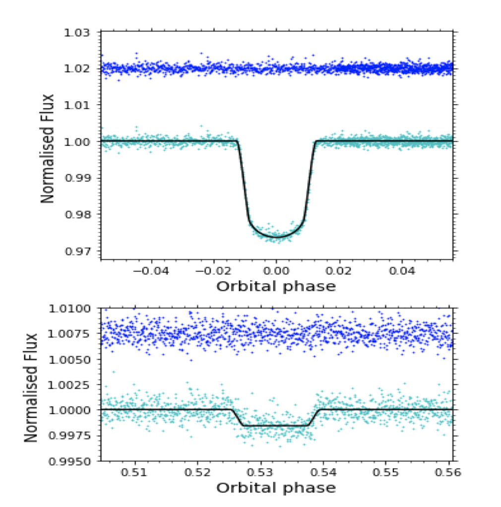

STATUS UPDATE: The TESS target list for sector 27, which is the first sector of the extended mission, is now online and can be found here.
We are also happy to announce that the TESS GI office will be hosting a special session at the 237th AAS Meeting (January 2021) entitled "Mining TESS Data with Machine Learning and Other Advanced Methods". We will be soliciting speakers via the regular AAS session submission - see you then!
Welcome TESS followers to this week's news bulletin! This week we present three papers using TESS data from the archive.
A search for rotation periods in 1000 TESS objects of interest (Martins et. al., 2020): The high cadence, high quality light curves provided by the TESS mission allow for the exploration of stellar rotation. Studying stellar rotation is important as it aids in our understanding of planetary evolution, planetary atmospheres, habitability conditions, and as such the potential for life around a given star. This paper exploits ~1000 objects of interest observed by TESS with a 2 minute cadence. Using Fast Fourier transform, Lomb-Scargle, and wavelet techniques the authors searched for rotation signatures and found 163 targets with such signatures. Of these targets 131 have unambiguous rotation periods ranging from 0.321 to 13.219 days. In addition the analysis revealed 10 stars with pulsation periodicities ranging from 0.049 to 2.995 days, and four eclipsing binaries.
TESS observations of southern ultra fast rotating low mass stars (Ramsey et. al., 2020): In this paper the authors present results following a systematic search for ultra fast rotators using TESS 2-min cadence, southern ecliptic hemisphere data. Using Gaia DR2 data they identify 609 stars which lie on the lower main sequence and have a period modulation < 1 day. When the period drops to < 0.2 days the fraction of stars which show flares drops as well. Faster rotators are meant to have stronger magnetic fields and therefore more flares, as such it is unlikely that the periods are a signature of the rotation rate. The paper goes on to explore the possible reasons for its findings.
The TESS light curve of the eccentric eclipsing binary 1SWASP J011351.29+314909.7 -- no evidence for a very hot M-dwarf companion (Swayne et. al., 2020): In 2014 the M-dwarf companion of the eclipsing binary star 1SWASPJ011351.29+314909.7 (J0113+31, primary mass of 0.95 M⊙) was reported to have an unusually high effective temperature. This effective temperature was inferred from the secondary eclipse death and was ~ 600 K higher than values predicted from stellar models. The result cast doubt on our understanding of low-mass stars and thus our ability to infer the properties of exoplanets orbiting them. Using TESS data the authors have re-examined the M dwarf and derive effective temperature of 3208 ± 43 K, assuming log g2 = 5, [Fe/H] = 0.4 and no alpha-element enhancement. Even if these assumptions are varied the authors found that the effective temperature changed by only 100K and as such the results do not support a large anomaly between observed and theoretical low-mass star temperatures.

Fig 1: Taken from Ramsey et. al., (2020). Histogram illustrating the fraction of stars in each period bin which show more than 0.044 flares per day. The sample is drawn only from stars that are brighter than TESS 14th magnitude. As the period gets shorter there is a decline in the number of stars, and a rapid drop at periods < 0.2 d. The mean mag of stars in each bin is also displayed, with no significant change over the period range.

Fig 1: Taken from Swayne et. al., (2020). The fitted normalized light curve of J0113+31 in phase intervals around the transit and the eclipse. The observed light curve is given in cyan and the best fit model in black. The residuals are given in blue.